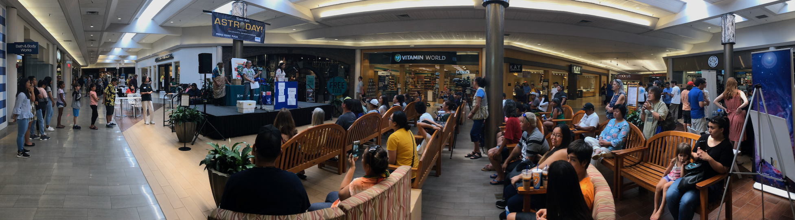

AstroDay

The indigenous Polynesian people of the Hawaiian Islands were expert astronomers for centuries, navigating their way to Hawai’i using their profound knowledge of the stars. Since astronomy has such a deeply-rooted connection within the Hawaiian community, AstroDay is held in Hilo on Astronomy Day to share the joys of astronomy with local communities.

Amateur and professional astronomers come from all over to teach, explore and share their experiences/science with thousands of people from all over the world. AstroDay features many on-stage performances and/or demonstrations throughout the day as well as several exhibits, hands-on activities, an inflatable indoor planetarium and more!

Above: IfA grad students performing a hands-on impact cratering demo at AstroDay.
[pictured above: Zachary Claytor and Ashley Chontos (me)]


Above: IfA grad students at the 2018 AstroDay
[pictured above (clockwise, starting at 12 o'clock): Ryan Dungee, Jessica Stasik, Ashley Chontos (me), Aaron Do, Laurie Chu, Maxwell Service, and Zachary Claytor]
Astroday West
The large success of AstroDay